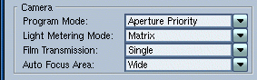
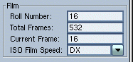
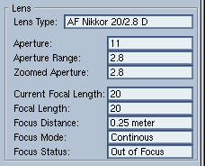
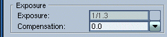
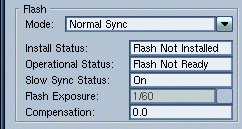
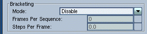
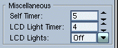

|
Controls
Toolbar
The information displayed in the Controls
window, is controlled via this toolbar. The buttons have the following
behaviour:
- Download - will update all the displayed
information, by reading the camera controls. This might take a while, especially
on 1200bps. As the Controls window is displayed, gIcon will automatically
download the camera controls. The downloaded values will become the default
camera control values.
- Upload - will upload the changed controls into the camera.
- Default - will restore the default camera controls, stored
when the Controls window was displayed.
- Focus - will issue the focus command to the camera.
- Release - will fire the camera. Note
that while the shutter is open no serial communication is possible, therefore
long time exposures are not possible via the serial port.
- Help - displays this page.
Camera Settings

For more information refer to your camera's user manual.
Film

The following film related information is available:
- Roll Number - the number of total rolls shot with the camera.
This Roll Number is not the same as the roll number displayed by the
downloader. The downloaded roll number refers to the number of rolls shot
with enabled memo holder.
- Total Frames - indicates the number of shutter releases. This counter
increments even if the camera was fired without having film loaded into
the camera.
- Current Frame - the same frame number as on the main LCD.
- ISO Film Speed - indicates the currently selected film speed.
Lens

Various lens related information are not available through
the camera's interface. The Lens Type will identify your lens.
It is possible that this field will display a number (in hex),
if it does not find the lens identifier in its database. In this case you are kindly
asked to send a mail to me,
with the number displayed and the exact lens description,
so that I can add the lens to the database.
Aperture indicates the current aperture set, Aperture Range
indicates the largest aperture the lens is capable of, the Zoomed Aperture
indicates the aperture range when the lens is zoomed.
The Current Focal Length indicates
the zoomed focal length of the lens, whereas the Focal Length indicates
the maximum focal length. Focus Distance is the distance in meters
between the camera and the subject. The Focus Mode, and
Focus Status are also indicated. However the Focus Status does
not always work properly (apparently it is lens dependent).
Exposure

The Exposure can be sent only in Manual and Shutter Priority
Program Modes. In the rest of the Program Modes the exposure is displayed as
it appears on the camera's LCD.
The Compensation combo allows you to compensate your camera
exposure.
Flash

There are four flash Modes Normal Sync, Slow Sync, Rear Curtain Sync, Red Eye Reduction.
In Normal Sync, a camera equipped with a flash
unit will use exposure times higher or equal than the one indicated
by the Flash Exposure. In Slow Sync / Rear Curtain Sync
the camera will use the metered exposures, but will fire
the flash when the shutter opens / closes. Flash Compensation information
is displayed as it appears on the flash's LCD.
Bracketing

Bracketing has four modes:
- Disable - bracketing is disabled, Frames Per Sequence
and Steps Per Sequence are not accessible.
- Auto Sequence - when the camera is in Continous Shooting mode, this
control will allow you to shoot a set number of frames as the shutter release
is depressed. This number is specified by the Frames per Sequence
control. If the camera is in Single Shooting mode, this feature will have
no effect.
- Bracket Exposure - in this mode the camera will take a number of
pictures indicated by the Frames Per Sequence control, bracketing
the exposures with the amount indicated by Steps Per Frame control.
- Bracket Flash - in this mode the camera will take a number of pictures
indicated by the Frames Per Sequence control, bracketing the flash
with the amount indicated by Steps Per Frame control.
- Multiple Exposure - this feature will stop advancing the film for
a number of exposures, indicated by the Frames Per Sequence control.
Miscellaneous
 |